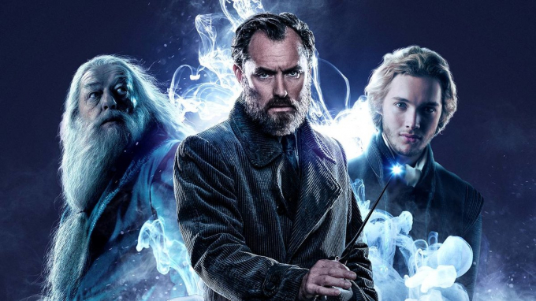

Dumbledore regresa a Hogwarts
La magia regresa el próximo jueves, con el estreno de Animales fantásticos: Los secretos de Dumbledore. Ambientada años antes del enfrentamiento entre Harry Potter y Lord Voldemort, la historia sigue al magizoólogo Newt Scamander (Eddie Redmayne) y un joven Albus Dumbledore (Jude Law) en sus intentos por detener al mago tenebroso Gellert Grindelwald (Mads Mikkelsen). Después de once años del final de la saga escrita por J.K Rowling, volveremos a ver al director de Hogwarts durante distintas etapas de su juventud de las que poco se sabe al momento.
